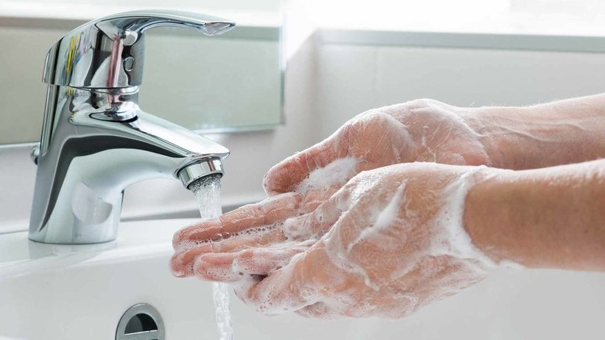
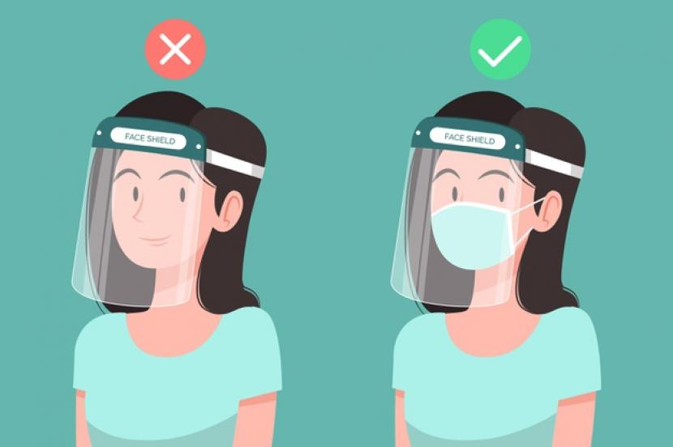
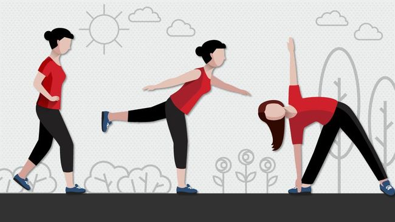

Apa itu CoronaVirus?
Coronavirus atau virus corona merupakan keluarga besar virus yang menyebabkan infeksi saluran pernapasan atas ringan hingga sedang, seperti penyakit flu. Banyak orang terinfeksi virus ini, setidaknya satu kali dalam hidupnya.
Information Detail Indonesia
deadea
Konfirmasi
4
Sembuh
4
Perawatan
4
Meninggal
Information Detail Dunia
12008934
ded
4
ded
4
ded
4
ded

Jika Anda adalah pekerja komuter yang berada di dalam transportasi umum,
akan sulit untuk menemukan air dan sabun. Anda bisa membersihkan tangan dengan
hand sanitizer. Gunakan produk hand sanitizer dengan kandungan alkohol minimal 60% agar lebih
efektif membasmi kuman.
Cucilah tangan secara teratur, terutama sebelum dan setelah makan,
setelah menggunakan toilet, setelah menyentuh hewan, membuang sampah,
serta setelah batuk atau bersin. Cuci tangan juga penting dilakukan sebelum menyusui bayi atau
memerah ASI.
Cara pakai masker bedah yang benar adalah sisi berwarna pada masker harus menghadap ke luar,
sementara sisi dalamnya yang berwarna putih menghadap wajah dan menutupi dagu, hidung, dan mulut.
Sisi berwarna putih terbuat dari material yang dapat menyerap kotoran dan menyaring kuman dari
udara.
Meski tidak sepenuhnya efektif mencegah paparan kuman, namun penggunaan masker
ini tetap bisa menurunkan risiko penyebaran penyakit infeksi, termasuk infeksi virus Corona.
Penggunaan masker lebih disarankan bagi orang yang sedang sakit untuk mencegah penyebaran virus dan
kuman, ketimbang pada orang yang sehat.


Jika bosan dengan makanan yang dimasak sendiri, Anda bisa membeli makanan siap saji atau makanan
di restoran melalui layanan pesan antar, namun pastikan makanan tersebut bersih dan sehat. Bila
perlu,
Anda juga menambah konsumsi suplemen sesuai anjuran dokter.
Selain itu, rutin berolahraga, tidur yang cukup, tidak merokok, dan tidak mengonsumsi minuman
beralkohol
juga bisa meningkatkan daya tahan tubuh agar terhindar dari penularan virus Corona.